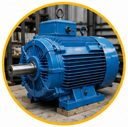
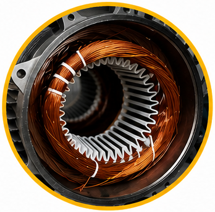
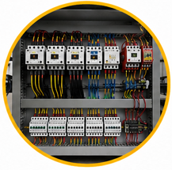
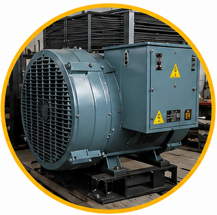
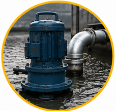
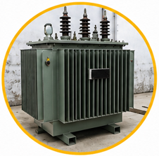

Nuestros servicios incluyen mantenimiento preventivo y correctivo, reparación de motores eléctricos, embobinado de motores industriales, instalación y mantenimiento de bombas sumergibles, reparación de plantas de emergencia, módulos de transferencia automática (AMF), elevadores y tableros de control.
Gracias a nuestra experiencia y compromiso con la calidad, ofrecemos soluciones eficientes que ayudan a mejorar el rendimiento y la vida útil de los equipos industriales de nuestros clientes.